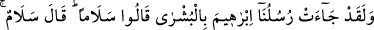
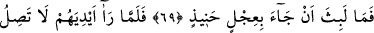
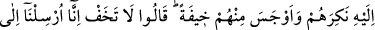
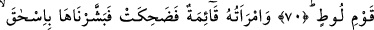
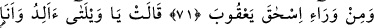
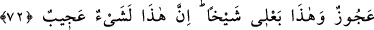
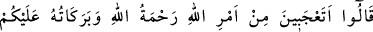
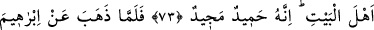
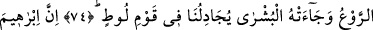
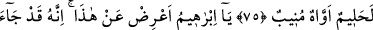
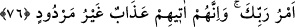

İBRÂHİM (A.S.) VE
ALLAH’IN ELÇİLERİ
69. And olsun ki elçilerimiz İbrahim’e müjde getirdiler ve: “Selam” dediler. O da:
“Selam” dedi ve hemen kızartılmış bir buzağı getirdi.
70. Ellerinin buzağıya uzanmadığını görünce, onları yadırgadı ve onlardan dolayı
içine bir korku düştü. “Korkma, biz Lût kavmine gönderildik.” dediler.
71. O sırada hanımı ayakta idi ve (bu sözleri duyunca) güldü. Ona da İshak’ı,
İshak’ın ardından da Yakub’u müjdeledik.”
72. (İbrahim’in karısı:) “Olacak şey değil! Ben bir kocakarı, bu kocam da bir
ihtiyar iken çocuk mu doğuracağım? Bu gerçekten şaşılacak bir şey!” dedi.
73. (Melekler) dediler ki: “Allah’ın işine mi şaşıyorsun? Ey ev halkı, Allah’ın
rahmeti ve bereketleri sizin üzerinizdedir. Şüphesiz ki O, övülmeye lâyıktır, iyiliği
boldur.”
74. İbrahim’den korku gidip kendisine müjde gelince, Lût kavmi hakkında
bizimle tartışmaya başladı.
75. İbrâhim gerçekten yumuşak huylu, bağrı yanık, kendisini Allah’a vermiş
birisidir.
76. (Melekler dediler ki:) “Ey İbrâhim, bundan vazgeç. Çünkü Rabb’inin emri
gelmiştir. Ve onlara, geri çevrilmez azap mutlaka gelecektir!”